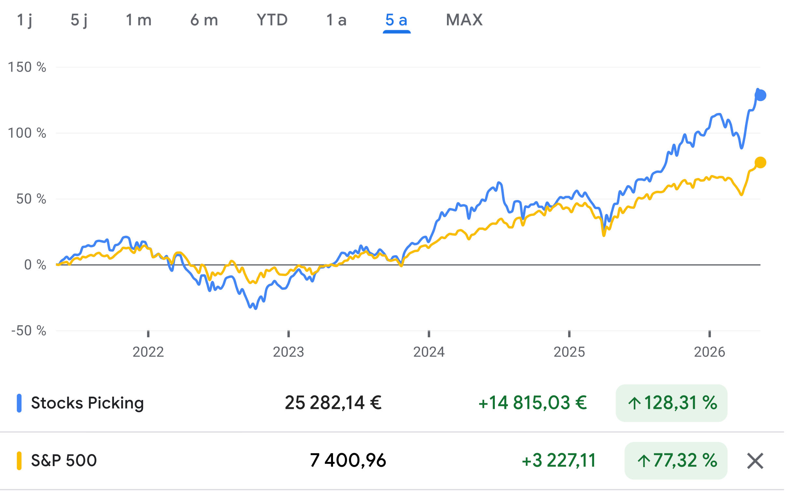
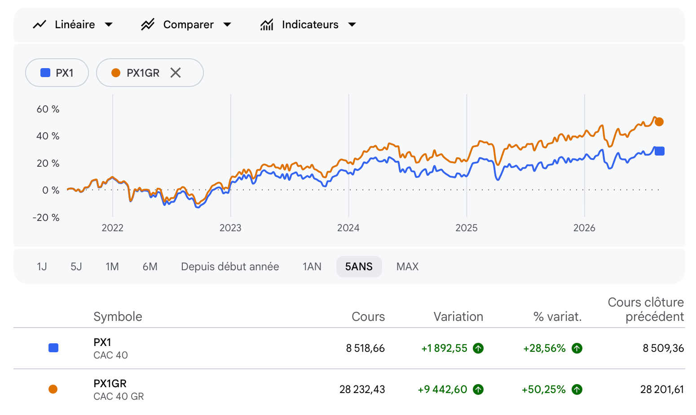
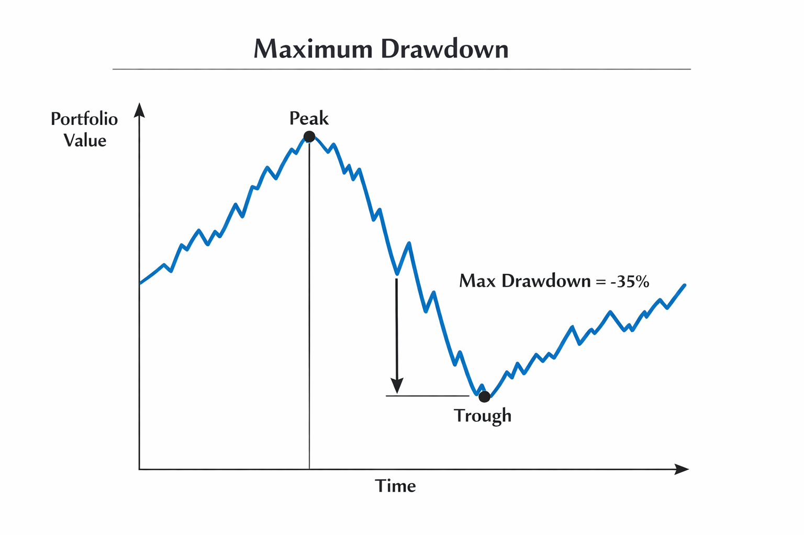
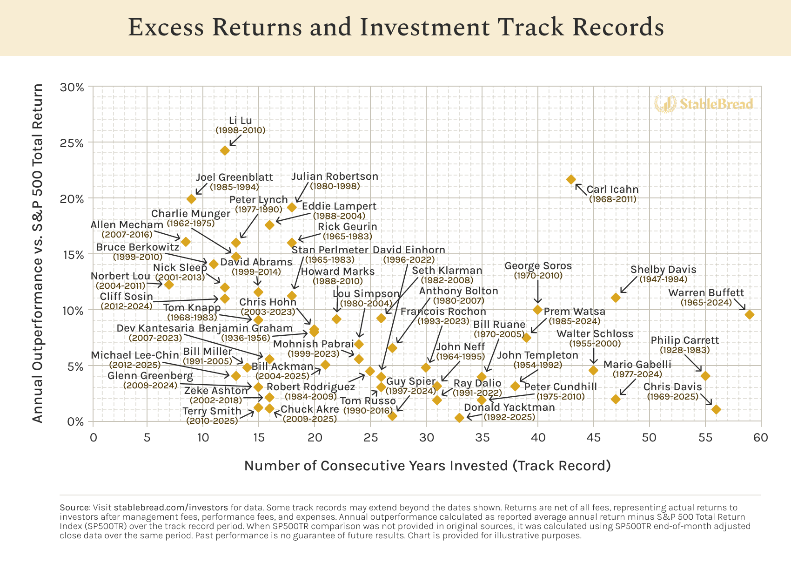
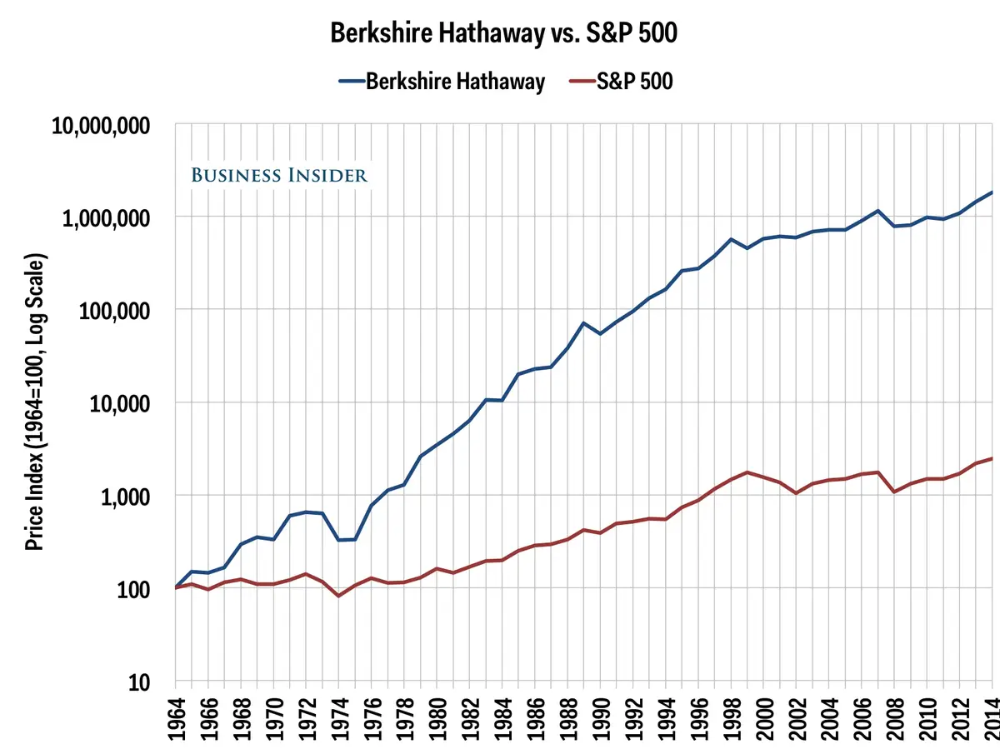

Lorsque l'on décide de prendre en main la gestion de son propre patrimoine en sélectionnant des actions individuelles (le Stock-Picking), on fait un choix fort. Ce choix nécessite du temps, de l'analyse, de la psychologie et des efforts constants. Pourtant, il existe une alternative extrêmement simple et passive : investir dans un tracker mondial (un ETF) qui se contente de répliquer mécaniquement la moyenne du marché, sans aucun effort de notre part et à des frais dérisoires.
Dès lors, une question existentielle, presque philosophique, se pose pour tout investisseur actif : nos efforts sont-ils réellement récompensés ? Sommes-nous en train de créer plus de richesse que si nous avions simplement acheté un ETF et fermé les yeux pendant dix ans ? C'est pour répondre à cette question cruciale de manière froide et mathématique qu'intervient le concept de Benchmarking.
1. Qu'est-ce qu'un Benchmark (Indice de référence) ?
Un benchmark, ou indice de référence en français, est un standard mesurable qui permet d'évaluer la performance d'un portefeuille d'investissement. C'est la ligne d'horizon, le mètre ruban financier implacable. Si vous réalisez une performance de +15% sur une année, vous pourriez être tenté de sabrer le champagne en vous croyant un génie de la finance. Mais si, durant cette même année, la moyenne du marché a fait +25%, votre performance réelle est en vérité très médiocre : vous avez "sous-performé" le marché. Vous avez pris plus de risques et fourni plus d'efforts pour un résultat inférieur.
Bien qu'il soit toujours intéressant de se comparer à plusieurs indices (comme le MSCI World pour une vision globale diversifiée, ou le CAC40 pour une vision locale), le mètre étalon absolu de la finance mondiale reste le S&P 500. Cet indice regroupe les 500 plus grandes entreprises américaines et dicte la tendance de l'économie mondiale. L'objectif fondamental d'un Stock-Pickeur est évident, bien qu'extrêmement ambitieux : battre la performance de ce marché. Si, sur une longue période, votre portefeuille ne parvient pas à surperformer ce benchmark, la décision la plus rationnelle serait de capituler, d'acheter un ETF S&P 500, et d'utiliser votre temps libre à d'autres activités plus productives.
2. Les Outils Pratiques pour se Comparer
Aujourd'hui, la technologie a démocratisé la finance. Il est devenu extrêmement simple pour un investisseur particulier de traquer sa performance et de l'adosser à un indice de référence, sans avoir besoin d'être un ingénieur financier travaillant chez Goldman Sachs.

Plusieurs solutions s'offrent à vous pour réaliser cette comparaison vitale :
- Les outils gratuits intégrés : Des plateformes comme Google Finance ou Yahoo Finance proposent un simple bouton "Comparer" sur les graphiques de votre portefeuille virtuel, permettant de superposer instantanément la courbe de n'importe quel indice.
- Les agrégateurs de patrimoine (Payants/Freemium) : De superbes outils modernes comme Finary, Moning ou Baggr synchronisent directement vos comptes de courtage et calculent votre surperformance (ou sous-performance) avec une précision chirurgicale, en intégrant automatiquement vos dépôts et vos frais.
- La méthode manuelle (Excel / Google Sheets) : Pour les puristes qui aiment maîtriser leurs données de A à Z, la création d'un fichier de suivi personnalisé reste la solution la plus économique, la plus malléable et la plus formatrice.
3. L'Erreur Fatale : "Price Return" vs "Total Return"
Lorsque les investisseurs particuliers commencent à se comparer au marché, 90% d'entre eux commettent une erreur mathématique monumentale qui fausse totalement leur jugement : ils comparent leur propre portefeuille (où ils encaissent et réinvestissent des dividendes) à un indice boursier "nu", c'est-à-dire un indice de type Price Return (qui ne mesure que l'évolution du prix des actions, sans compter les dividendes qu'elles versent).
C'est une tricherie intellectuelle. Pour que le combat soit équitable, vous devez impérativement vous comparer à un indice de type Total Return (TR) ou Gross Return (GR). Ces indices simulent le réinvestissement immédiat de tous les dividendes versés par les entreprises qui les composent.

L'exemple de l'indice français est le plus frappant. Les journaux télévisés parlent toujours du "CAC 40" classique (la courbe bleue). Mais le véritable rendement des plus grandes entreprises françaises, si l'on réinvestit leurs généreux dividendes, est mesuré par le "CAC 40 GR" (la courbe orange). La différence de performance sur seulement quelques années est colossale. Si vous souhaitez comparer vos performances européennes, utilisez toujours le CAC 40 GR. Si vous vous comparez aux États-Unis, utilisez le S&P 500 TR.
4. Le Piège de la Devise : Le Risque de Change (EUR/USD)
Une autre subtilité technique sépare l'amateur du professionnel : la gestion du risque de change. En tant qu'investisseur francophone gérant son portefeuille en Euros, se comparer directement à un indice américain coté en Dollars n'a absolument aucun sens mathématique si l'on ne prend pas en compte les fluctuations monétaires.
Imaginez la situation suivante : le S&P 500 réalise une superbe année et affiche +20% en dollars. Cependant, durant cette même année, le Dollar américain s'est affaibli de 10% face à l'Euro. La performance "réelle" pour vous, investisseur européen, ne sera pas de +20%, mais d'environ +10%. Le taux de change aura effacé la moitié de vos gains. À l'inverse, un dollar fort peut booster artificiellement vos performances.
Pour obtenir une lecture parfaite et totalement honnête de votre surperformance réelle, vous devez comparer la valorisation de votre portefeuille en euros avec un benchmark couvert en euros, ou tout simplement utiliser le graphique d'un ETF S&P 500 coté en euros sur la place d'Euronext (comme le célèbre ETF S&P 500 de BlackRock ou Vanguard coté à Paris ou Amsterdam).
5. La Performance Ajustée au Risque : Le Maximum Drawdown
Le Quality Investing ne consiste pas seulement à faire +20% quand le marché dans son ensemble fait +18%. L'attaque est importante, mais la défense l'est tout autant. Le véritable pouvoir de la Qualité se révèle pendant les crises, les récessions et les krachs boursiers. C'est ici qu'intervient le concept de Performance ajustée au risque.

L'indicateur le plus parlant pour mesurer ce risque est le Maximum Drawdown (la perte maximale séquentielle). Imaginez que sur une période de 5 ans, votre portefeuille ait généré exactement la même performance finale que le S&P 500 (par exemple +80%). Un regard superficiel conclurait à un match nul. Mais si l'on regarde de plus près, lors du marché baissier sévère de 2022, votre portefeuille hyper-qualitatif n'a baissé que de -12% (son Maximum Drawdown), alors que le S&P 500 a plongé dans un gouffre de -25%.
Dans ce scénario, vous avez largement gagné. Vous avez obtenu un rendement identique au marché, mais en subissant beaucoup moins de volatilité, d'angoisse et de sueurs froides. C'est ce que les professionnels appellent un excellent rendement "ajusté au risque". La sérénité et le sommeil de l'investisseur ont une valeur inestimable qui ne se lit pas uniquement sur la ligne finale des gains.
6. La Réalité des Super-Investisseurs : Le Temps est le Juge de Paix
L'une des illusions les plus tenaces en bourse est de croire que battre le marché est facile à court terme. Et en un sens, c'est vrai : avec un peu d'audace ou un coup de chance sur une action très volatile, n'importe quel amateur peut surperformer le S&P 500 sur une ou deux années exceptionnelles. Mais la véritable légende s'écrit sur la durée. Ce qui a hissé les plus grands gérants de l'histoire au rang de "Super-Investisseurs", c'est leur capacité à générer des rendements excédentaires non pas sur 2 ans, mais sur 20, 30 ou 40 ans.

Il est crucial d'étudier ce graphique et de comprendre une réalité mathématique souvent difficile à accepter psychologiquement pour l'ego de l'investisseur : même les meilleurs gérants du monde ne battent pas le marché chaque année. Il y aura inévitablement des périodes (parfois 2 ou 3 années consécutives) où votre stratégie Quality Investing sous-performera la moyenne du marché, notamment lors de bulles spéculatives irrationnelles sur des entreprises de mauvaise qualité ou des "mèmes stocks". C'est normal, c'est la Tracking Error (l'erreur de suivi). Pour battre l'indice, il faut oser être différent de l'indice.
Ce qui fait la différence, c'est la moyenne sur le très long terme. Et en analysant le comportement de tous ces "Super-Investisseurs", trois points communs majeurs ressortent systématiquement de leur philosophie :
- La Concentration : Ils ont refusé la sur-diversification (qu'ils appellent "diworsification"). Ils ont alloué la majorité écrasante de leur capital à un petit nombre de leurs plus fortes convictions.
- La Valorisation : Ils n'ont jamais surpayé aveuglément la qualité. Ils ont acheté ces entreprises exceptionnelles à un prix correct en exigeant une Marge de Sécurité.
- La Patience : Ils ont conservé leurs positions pendant des décennies, laissant la magie des intérêts composés opérer paisiblement, tout en ignorant le bruit médiatique ambiant.
7. L'Exemple Ultime : Warren Buffett vs S&P 500
On ne peut décemment pas clôturer un chapitre sur le benchmarking sans analyser les résultats du maître absolu. Warren Buffett, avec son conglomérat Berkshire Hathaway, est l'incarnation vivante de la stratégie d'investissement de qualité à long terme.

Ce graphique, représenté sur une échelle logarithmique (qui permet de mieux visualiser les croissances exponentielles sur de longues périodes), est purement saisissant. Sur plus de 50 ans, la courbe de Berkshire Hathaway surpasse de manière ahurissante la courbe rouge de l'indice américain de référence. Cet écart monumental de richesse ne s'est pas fait par magie, ni par des opérations de trading haute fréquence ou des algorithmes complexes. Il s'est construit en sélectionnant scrupuleusement des entreprises possédant un fort avantage concurrentiel (Moat), capables de générer d'immenses flux de trésorerie, dirigées par des managers intègres, et en refusant obstinément de vendre lors des krachs boursiers.
C'est précisément l'objectif et la promesse de la méthodologie que nous avons apprise tout au long de cette formation. Le benchmarking n'est pas un outil de vanité ; il est là pour nous garder humbles, pour vérifier froidement que nos décisions sont rationnelles, et pour nous rappeler constamment que notre véritable adversaire n'est pas le marché en soi, mais notre propre psychologie face à ce marché.
🔑 Ce qu'il faut retenir
Le benchmarking est l'acte indispensable de comparer la performance de son propre portefeuille à celle d'un indice de référence majeur. C'est le juge de paix impartial qui valide ou invalide la pertinence de nos choix actifs.
Pour que la comparaison soit honnête, il faut éviter trois pièges mortels : toujours se comparer à un indice "Total Return" (dividendes réinvestis), prendre en compte le risque de change (Euro/Dollar), et analyser la performance ajustée au risque (Maximum Drawdown) pour vérifier si l'on a protégé son capital lors des crises.
Enfin, n'oubliez jamais que la surperformance se mesure sur des décennies. Il est parfaitement normal de sous-performer le marché sur 1 ou 2 ans. Les plus grands investisseurs de l'histoire bâtissent leur fortune en concentrant leur portefeuille sur la Qualité, et en faisant preuve d'une patience que 99% des acteurs du marché ne possèdent pas.